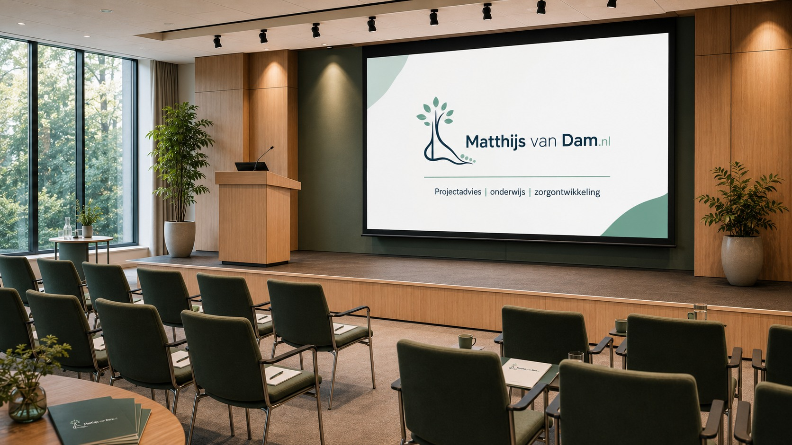

Participeren in klankbordgroepen, projectgroepen of adviestrajecten vanuit mijn rol als medisch specialist in de tweede lijn, met ervaring uit een topklinisch opleidingsziekenhuis en een regionaal netwerk rond mijn expertisegebieden.
Advies en consultancy
Professionele bijdrage aan zorgontwikkeling
Voor niet-patiëntgebonden opdrachten kan ik op projectbasis bijdragen met inhoudelijk projectadvies, hulp bij implementatie en gezamenlijke afstemming, onderwijs of presentaties, en het begeleiden van bijeenkomsten.

Vormen van samenwerking
Ik denk graag mee wanneer orthopedische inhoud, tweede-lijnservaring en praktische implementatie elkaar raken. Daarbij kan mijn rol verschillen: als adviseur in een project, als sparringpartner bij implementatie, als spreker of docent, of als gespreksleider bij een inhoudelijke bijeenkomst. Rol, vorm en tijdsinvestering spreek ik vooraf duidelijk af.
De rode draad is steeds dat het niet om individuele patiëntenzorg gaat, maar om een afgebakende opdracht rond passende zorg, regionale samenwerking, leefstijl en artrosezorg, patiëntcommunicatie, digitale ondersteuning, onderwijs of professionele afstemming.
Voor een eerste vraag over advies, consultancy of projectontwikkeling kun je per e-mail contact opnemen. Gebruik deze route niet voor patiëntvragen, afspraken of medische gegevens.
Meedenken over de praktische inrichting van een zorgnetwerk: wie sluit aan, welke afspraken zijn nodig en hoe blijft de samenwerking uitvoerbaar voor patiënten, professionals en organisaties?
Vanuit mijn achtergrond als medisch specialist verzorg ik regelmatig onderwijs en presentaties over mijn expertisegebieden, zoals voet- en enkelzorg, knieklachten, leefstijl, complexe combinaties van klachten en zorginnovatie zoals 3D-planning of netwerkzorg.
Als enthousiaste dagvoorzitter of inhoudelijk gespreksleider help ik een groep in beweging te brengen, het gesprek scherp te houden en ruimte te maken voor verschillende perspectieven.
Thema's
Waar ik over kan meedenken
Mijn bijdrage komt voort uit mijn werk als orthopedisch chirurg in de tweede lijn, met aandachtsgebieden in voet- en enkelzorg, knieartrose, sportgerelateerde klachten, leefstijl, netwerkzorg en digitale ondersteuning.
Orthopedische expertise in de tweede lijn
Vanuit de dagelijkse praktijk kan ik meedenken over voet-, enkel- en knieklachten, indicatiestelling, conservatieve en operatieve zorg, verwijzing, terugverwijzing en de informatie die nodig is om keuzes begrijpelijk te maken.
Artrose, leefstijl en passende zorg
Bij artrose en leefstijlgerelateerde gewrichtsklachten breng ik een respectvolle, praktische blik mee op bewegen, obesitas, verwachtingen, operatiemomenten en passende ondersteuning buiten en binnen het ziekenhuis.
Netwerkzorg in de regio
Vanuit een topklinisch opleidingsziekenhuis met een breed regionaal netwerk kan ik helpen bij vragen over samenwerking tussen ziekenhuis, huisartsenzorg, fysiotherapie, podotherapie, orthopedisch schoentechniek en sportmedische zorg.
Digitale zorg en patiëntinformatie
Ik kan inhoudelijk bijdragen aan digitale zorgpaden, keuze-informatie, patiëntcommunicatie, monitoring, evaluatie en implementatie, met aandacht voor wat in de spreekkamer echt helpt.
Onderwijs en klinisch redeneren
Ik ontwikkel en geef onderwijs rond orthopedische thema's, klinische besluitvorming, probleemgeoriënteerd denken en zorgontwikkeling voor zorgprofessionals, teams en samenwerkingspartners.
Praktijk
Voorbeelden uit de praktijk
Onderwijs
Onderwijs en scholing
Voorbeelden van onderwijs waaraan ik bijdraag, met aandacht voor orthopedische inhoud, klinisch redeneren en praktische toepasbaarheid.
Op LinkedIn deel ik zo nu en dan waar ik aan werk: projecten, publicaties, onderwijs en ontwikkelingen in de zorg.
Volg op LinkedIn